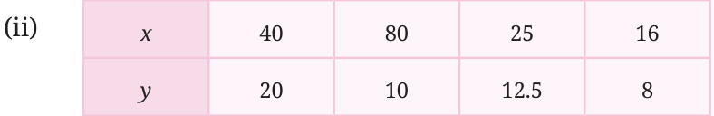
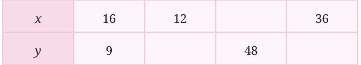

- 1.Which of these are in inverse proportion?

- 2.Fill in the empty cells if x and y are in inverse proportion.

Example 3: 20 workers take 4 days to complete laying a road. How many days will 10 workers take to complete laying the same length of road? If we decrease the number of workers, then the number of days to complete the work will increase by the same factor. So these quantities are inversely proportional. So, \(x_{1}y_{1}= x_{2}y_{2}\).
Thus, \(20 \times 4 = 10 \times y_{2}\)
\(y_{2}= \frac{20 \times 4}{10} = 8\).
It will take 8 days for 10 workers to complete the work. We notice that when the number of workers halved, the number of days to complete the work doubled. Quantities are inversely proportional if, when one quantity changes by a factor n, the other quantity changes by the inverse \(_{n}^{1}\).
Example 4: 2 pumps can fill a tank in 18 hours. How much time will it take to fill the tank if we add 2 more pumps of the same kind? If we add 2 more pumps, we will have 4 pumps. Let us denote the time taken to fill the tank with 4 pumps by x. If we increase the number of pumps by n, then the time taken to fill the tank will decrease by the same factor n, so the quantities are inversely proportional. Since the quantities are inversely proportional, the product remains constant. So,
\(2 \times 18 = 4 \times x\). \(x = \frac{2 \times 18}{4} = 9\).
It will take 9 hours to fill the tank.
Example 5: A school has food provisions to feed 80 students for 15 days. If 20 more students join the school, for how many days will the provisions last? More students \(\to\) fewer days the provisions will last. The quantities are inversely proportional. If x is the number of days,
\(80 \times 15 = 100 \times x\). \(x = \frac{80 \times 15}{100} = 12\).
The provisions will last for only 12 days.
Example 6: If Ram takes 1 hour to cut a given quantity of vegetables and Shyam takes 1.5 hours to cut the same quantity of vegetables, how much time will they take to cut the vegetables if they do it together? Consider the work done to cut the given quantity of vegetables as 1 unit of work. Let us figure out the work done by each person in 1 hour.
- •Ram finishes the work in 1 hour, so in 1 hour he does 1 unit of work.
- •Shyam finishes the work in 1.5 hours, so in 1 hour he does \(\frac{1}{1.5} = \frac{2}{3}\)
units of work. So, the work done by both in 1 hour is \(1 + \frac{2}{3} = \frac{5}{3}\) units of work. Therefore, to complete \(\frac{5}{3}\) units of work, it takes them 1 hour if they work together. How much time will it take them to complete 1 unit of work? Is the quantity of work and time taken to complete it directly or inversely proportional? It is directly proportional. So, this can be represented as
\(\frac{5}{3}\) : 1 :: 1 : x where x is the time taken.

Since it is a direct proportion, we know that
\(\frac{5}{3} \times x=1 \times 1 x = \frac{1 \times 1}{5} = \frac{13}{55} =\) .
3 3 If they cut the vegetables together, they will finish in \(\frac{3}{5}\) hours.